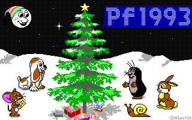

Tak tedy - zaèalo to u dinosaurù. Vlastnì u Nìmeèkù. Stalo se jim, �e jsem se narodil - v polovinì mrazivého ledna roku 1963. A tak nás bylo ètyøi. Maminka Rù�ena, uèitelka ZDŠ, táta Ladislav, úøedník Jednoty, o 5 let starší brácha Ladislav a já.
Byl jsem slavnı u� pøi narození, kdy� o mnì, a mé
mamince, psali i v novinách. :-)
Maminka nebyla ta typická pøísná úèa, ale hodná a starostlivá máma. To táta byl ten pøísnı, od kterého obèas pøišlo i pár facek. A brácha - to byl mùj Velkı bratr, starostlivı Velkı uèitel. A já byl ten zhıèkanec, kterému vše dopøávali a rozmazlovali ho. Maminèin tatínek byl pekaø. Od maminky jsme slıchali pøíhody, kdy� napø. nesla pecen chleba do pece, zakopla a do chleba otiskla svá kolena. A dìdeèek o ni následnì pøerazil vaøeèku.
Babièka se o
mì starala v�dy kdy� maminka nemohla.
Lan�hot, má rodná vesnièka na nejji�nìjší Ji�ní Moravì, vlastnì nebyla vesnièkou, ale mìstysem. Ani nevím proè. Naše ulice byla døíve Souhrady a pak Palackého, a to také nevím proè ji pøejmenovali. Asi se nìèím provinila proti novému politickému zøízení.
Na tuhle fotku si vzpomínám.
Byl tam pan fotograf
s bleskem na stojanu a stále
po mnì nìco chtìli.
Pøed naším domem se rozprostírala "Lu�a", velké prostranství bez
lou�í, ale asi nìkdy døíve bıvala rybníèkem podle toho oznaèení. Díky tomu jsme
mívali na hody kolotoèe pøímo pøed okny. Vzpomínám na øemeslníky ze Slovenska,
kteøí tudy jezdili na kolech. Jednak to byl drotár, kterı vyvolával své obvyklé
"Dratóva� hrnce flekóva�!" a pak brusiè, kterı volal "Nù�ky!
No�e! Brósím!" A pak ještì obcházely staré cikánky, které nabízely vrbová
koš�ata. Tìm se neplatilo penìzi, ale starım obnošenım šatstvem.
Pøed baráèkem jsme mìli 2 mohutné oøechy, stejnì jako všichni ostatní na
ulici. V�dy nádhernì vonìly, obzvláštì na jaøe, kdy� z nich opadávaly kvìty
vypadající jako tlusté housenky. Miloval jsem tyhle cesty ze školy, kdy
sluníèko svítilo a oøechy tak krásnì vonìly. Bylo z nich v�dy hodnì oøechù. Ale
pak jednoho dne se otec rozhodl a oøechy pokácel, prı �e nám stínily. A všichni
sousedé ho následovali. Od tìch dob bıvalo v domì v létì horko a ulice ztratila
své kouzlo, obzvláštì kdy� ji pak ještì vydlá�dili chodníky a vyasfaltovali
silnici.
Jako první v ulici jsme mìli auto, Škoda 1201 "stejšn". U�
postarší. Táta ho èasto spravoval, ale jistì to pøispìlo k tomu, �e se z bráchy
stal zruènı automechanik a klempíø.
Mì spíš v�dy bavilo nìco si kutit nebo stavìt. Ale zvláštní, v�dy jsem
se tìšil, �e a� napø. sestavím to slo�ité kolejištì vláèku s automaticky
øízenımi vıhybkami, tak pak si s tím budu hrát. Jen�e okam�ikem dokonèení mì to
pøestalo bavit. Zøejmì zvláštnost konstruktérù - hlavní na tom všem je cesta,
vyøešení nìjakého problému, ale vısledek je pak u� nezajímavı.
Má �ivotnì nejdùle�itìjší kniha se jmenovala "Šolim, já a
tranzistory", kterou jsem objevil v tátovì knihovnì. Mnoho pokusù z knihy
jsem realizoval, ale zpoèátku jsem nechápal, co to dìlají s tím tranzistorem,
proto�e takto se v té dobì øíkalo kapesnímu tranzistorovému rádiu. Ne�
jsem pochopil, �e tranzistor je souèástka a ne rádio. A èasem jsem se stal i
hrdım majitelem prvních dvou 102NU71, zakoupenıch v Ro�novì u Sedláèka.
Zpìtnì mì zará�í, �e kromì stavby rùznıch hejblátek, blikátek, pøijímaèù
a intervalovıch stìraèù, jsem se hrabal i v domácích spotøebièích - a rodièe mì
nechali to dìlat. Asi mi hodnì dùvìøovali, kdy� jsem dìlal rozborku a sborku
domácího elektronkového gramorádia nebo se hrabal v našem televizoru Anabela a
dokonce pod napìtím. Ale u� i otec byl kutil - vzpomínal, jak s kamarádem
pøekuchali nìjaké vojenské zaøízení na vysílaè a pøibìhl na nì známı, kterı v
rádiu zaslechl jejich "ty vole, ono to funguje!" U nás doma byla
celkovì velká dùvìra a pøejícnost. A� èasem jsem zjistil, �e to jinde není tak
samozøejmé. Napø. jsem nikdy nedostával kapesné - rodièe mi dali v�dy vše co
jsem potøeboval, proto�e vìdìli, �e jsem šetrnı a nebudu utrácet zbyteènì. Naopak
mì vyzıvali, abych si na støední nekupoval jen nejlevnìjší obìdy v bufetu.
Dùvìøujte lidem - a oni se stanou poctiví.
Ro�nov pod Radhoštìm se stal mım lákadlem, proto�e znamenal vırobu tìch
nádhernıch polovodièovıch elektrosouèástek. V roce 1977 jsem se dostal do
celostátního kola soutì�e Integra, kde jsme si postavili své první zesilovaèe
s MDA2010 a dostali balíèek kouzelnıch polovodièovıch souèástek. Tím jsem
si Ro�nov zcela zamiloval a upsal se na dráhu elektroniky.
Následovaly 4 roky gymnázia v Bøeclavi a pak 5 let elektro fakulta VUT
Brno, obor radiotechnika. Tam jsem poznal i svou �enu, stavaøku, a poslední rok
studia jsme se vzali. Po škole, v záøí 1986, jsem nastoupil do práce - a kam
jinam, ne� do Tesly Ro�nov. Jen ne k polovodièùm, ale jako technik poèítaèù
Robotron ve vırobì barevnıch obrazovek.
S prvním poèítaèem jsem se setkal na støední škole, pøi branném dni
Svazarmu. Byl jím Sinclair ZX81. Obdivovali jsme tento technickı zázrak a
pøedevším pøedvádìnou hru "Dìlo", spoèívající ve støelbì na cíl pod
zadanım úhlem a se zadanou rychlostí. Dìlo bylo znázornìno èernobílou
"kostièkovou grafikou", s vıstupem na pøenosnı televizor Merkur.
V Amatérském rádiu jsem se setkal s popisem 8-bitového procesoru Intel
8008 se 14-bitovou sbìrnicí. Hltal jsem popisy instrukcí a uchvacovaly mì
mo�nosti, co takovı jeden integrovanı obvod vše doká�e. A pøál jsem si se s ním
setkat.
Technice mikropoèítaèù jsem propadl natolik, �e jsem si zaèal na vysoké
škole stavìt svùj vlastní mikropoèítaè na bázi 8-bitového procesoru U880D
(vıchodonìmecká obdoba Z80) za vydatné pomoci popisù stavebnice zveøejòované
tehdy v Amatérském rádiu. Vìtšinu èástí jsem si navrhl vlastní. Pøedevším
zobrazovací kartu. Pracovala sice v èernobílém znakovém re�imu (statické pamìti
MHB2114, ROM generátor znakù), ale umo�òovala i ètvereèkovou pseudografiku.
Pamì�ovı modul byl sestaven z dynamickıch pamìtí MHB4116. Transformátor mi
nechal navinout spolu�ák v nìjakém závodì. Bohu�el nejvìtším zádrhelem byla
sbìrnice z plošného spoje, která se mi podleptala, a tak byly problémy se
spolehlivostí. A také proto, �e namísto tì�ko dostupnıch FRB konektorù jsem
pou�il objímky pro integrované obvody. Klávesnici jsem si vyrobil membránovou,
ze staniolu a fotopapíru nalepeného na plošném spoji.
Kdy� se mi poèítaè podaøilo rozchodit, byl to jen "kus holého
�eleza". Ze zaèátku samozøejmì nemìl �ádnı firmware, tak�e první hraní si
s ním znamenalo pøipojit k nìmu øadu pøepínaèù Izostat a pøi ka�dém
zapnutí nejdøíve namaèkat krátkı zavádìcí program v binárním kódu pomocí
DMA pøenosu. Tento úvodní program obsahoval základní monitorovı program s
obsluhou klávesnice a displeje. S jeho pomocí jsem v HEX kódu na klávesnici na�ukal
zavádìcí program, kterı slou�il k nata�ení programu z magnetofonu.
Datovı formát vycházel z formátu tehdy nejúspìšnìjšího herního poèítaèe ZX
Spectrum. Psaní programu pøedstavovalo na�ukání programu v HEX kódu (program
jsem mìl ji� ruènì zkompilovanı na papíøe), napsání kódu pro ulo�ení na
magnetofon a poté ulo�ení programu na magnetofon.
Po prvních seznamovacích pokusech jsem si ji� troufnul k napsání
firmware do svého "PC". Mìl jsem pro nìj pøipravenu pamì� PROM 1 KB.
Tehdy ještì nemazatelnou, tì�ko sehnatelnou a také drahou. Proto jsem mìl jen
jedinı pokus, kterı musel vyjít. Stále dokola jsem procházel program firmware a
hledal mo�né chyby. Vyzkoušení pøedem nebylo mo�né. Kdy� jsem vıvoj uzavøel,
pøedal jsem zdrojovı kód spolu�ákovi, kterı mi jej vypálil na svém ZX Spectru.
Vlo�il jsem PROM do poèítaèe, zapnul - a ono to skuteènì fungovalo, a dokonce
bez chyby! Bylo mo�né psát programy v HEX kódu, ukládat je na magnetofon a
naèítat zpìt.
Dalším mım "poèítaèem" byla kalkulaèka TI-58C. Tu mi koupili
rodièe v Tuzexu, kdy� jsem byl na vysoké škole, za bony v pøepoètu na 4700 Kè
(v�dy� jsem psal, �e jsem byl hıèkanı a rozmazlovanı!). V té dobì to znamenalo
dva prùmìrné platy. Na kalkulaèce jsem se hodnì vyblbnul a pozdìji i napsal
v Petrovi její emulátor, proto�e jsem ji mìl hodnì rád. Co ta tehdy
dokázala!
Po skonèení vysoké školy si mì vy�ádala povinná roèní vojna. Ale mìl jsem štìstí. Byl tam zakoupen poèítaè
Sharp MZ-821, se kterım jsem si mohl ve volnıch chvílích hrát a jeho� grafické
schopnosti i hardwarové a softwarové vybavení mì uchvátily. Zpoèátku jsme na
nìm hráli hry, které kolegové bùhví odkud shánìli. Poté jsem zaèal psát vlastní
programy v Basicu. A nakonec jsem zaèal luštit jeho vnitøní kód. Postupnì jsem
si vypisoval obsah jeho monitorového programu a poté i Basic interpreteru a
nìkterıch dalších programù a luštil je. Nebyl k dispozici disassembler,
tak�e vše jsem dìlal z HEX vıpisu pomocí tabulek instrukcí, které se brzy
staly zbyteèné, proto�e jsem si kódy ji� pamatoval. Popsal jsem takto mnoho
sešitù instrukcemi procesoru, jejich� vıznam jsem pak luštil, a� mi bylo jasné,
co která èást programu dìlá. Luštìní cizích hotovıch programù mi v�dy dalo
nejvíce programátorskıch znalostí.
S poèítaèem Sharp MZ-821 jsem se s�il natolik, �e ihned po vojnì jsem si
ho musel koupit. Objí�dìl jsem tehdy nìkolik mìst a ptal se v prodejnách
Elektro, zda ho mají. Nakonec jsem ho sehnal ve Vsetínì, i kdy� jen verzi bez
magnetofonu, MZ-811, za 6800 Kè. Vzpomínám si, kdy� jsem ho vítìzoslavnì a
š�astnì pøivezl domù, na ty nesouhlasné a vyèítavé pohledy mé �eny. Nechápal
jsem, jak mù�e nesdílet radost z tak ú�asného stroje! Sharp jsem pøipojil
na svùj milovanı tapedeck Grundig CN 510 a u� jsem ho �ivil programy, které
jsem si pøivezl z vojny.
Po návratu z vojny jsem pokraèoval v Tesle Ro�nov jako technik poèítaèù
Robotron. Nepøitahovaly mì velké sálové poèítaèe, specializoval jsem se na
periferní zaøízení zalo�ená na 8-bitovıch procesorech U880D. Opìt zvítìzila
touha po poznání, a tak jsem brzy znal mnoho zaøízení nejen po hardwarové
stránce, ale i po stránce software a firmware. Jednalo se napø. o tiskárny
K6314, o terminály UBT a BDT, jejich� EEPOM jsem disassembloval. Mezi nimi i
mikropoèítaèe K5120 s operaèními systémy SIOS (interpreter vnitøního
binárního kódu) a SCPX (varianta systému CP/M).
Mnoho novıch sešitù se plnilo vıpisy disassemblovanıch programù.
Nejzajímavìjší pro mì byl právì systém SCPX. Vytvoøil jsem si na pomoc program
pro zpìtnı pøeklad kódu, kterı programy analyzoval a trasoval, aby rozlišil kód
a data, a umo�òoval snadné komentování odkazù a referencí.
Poèítaè øady IBM PC jsem poprvé spatøil v roce 1988, kdy si mì šéf
zavolal, abych mu poradil, jak se takovı poèítaè pou�ívá. Byl to zbrusu novı
Robotron XT 5 MHz s 20 MB harddiskem a èernozelenım monitorem. Pøedvedl
jsem mu pár pøíkazù z prostøedí CP/M (jako DIR, TYPE a Ctrl+P), které
kupodivu fungovaly i v systému DOS. Poèítaè se zaèal pou�ívat pro databázové
systémy, ale mimoto naèerno i na hry. Èasem jsem do nìj zaèal také zabrousívat
a seznamovat se s PC programy.
Po nìjaké dobì bylo zakoupeno ze Slušovic nìkolik novıch poèítaèù PC-AT
12 MHz s harddiskem 40 MB (ka�dı údajnì za 470 tisíc) a k nim mnoho disket se
software. Jednalo se vìtšinou o anglické programy, které byly v binárním
kódu poèeštìny a vepsán copyright Slušovic. Zaèal jsem PC také bohatì vyu�ívat,
kromì vlastní softwarové tvorby i jako CAD stanici (OrCAD pro schémata a
Redboard na plošòáky).
Pøi práci s PC se objevila potøeba usnadnìní manipulace se soubory, k
èemu� slou�ily souborové mana�ery. K mım nejoblíbenìjším prostøedkùm patøil
souborovı mana�er Ergo a textovı editor Context. K editoru Context jsem napsal
ovladaèe pro podporu èeštiny a práci v grafickém i textovém módu a po další
roky jsem ho pou�íval jako programátorskı editor. Souborovı mana�er Ergo byl
èasem vytlaèen programem PCTools (PCShell) a ten poté nahrazen geniálním
programem Norton Commander.
Brzy se zaèal objevovat strašák softwarové policie a potøeba software
legalizovat. Ceny software byly tehdy ještì nepøijatelné i pro podnik, a tak se
objevil návrh, abych zkusil vytvoøit náhradu za nejpou�ívanìjší z programù -
Norton Commander. Zkusil jsem to, a tak v roce 1990 vznikl program MNShell,
pozdìji pøejmenovanı na DOS Mana�er. Jeho obliba v podniku rychle rostla, a� se
objevila myšlenka opustit zamìstnání a pustit se do podnikání. Toho se chytla ro�novská
firma Golem, zabıvající se tehdy ochrannım systémem Hradba (slou�ícím k ochranì
pøed ilegálním kopírováním programù) a nabídli mi spolupráci a své bohaté
podnikatelské zkušenosti. A tak jsem opustil zamìstnání a vrhl se do
podnikatelské sféry.
DOS Mana�er
byl náš hlavní prodejní artikl.
Mimochodem, s firmou Golem jsem se seznámil tak, �e pøes mého šéfa
hledali nìkoho, kdo by vyzkoušel odolnost jejich Hradby proti prora�ení. Trochu
jsem je zaskoèil tím, �e jsem ji prorazil. Neèekali, �e nìkdo provede tak
podrobnou analızu se simulacemi k odstranìní jednotlivıch vrstev ochrany.
Ale díky tomu našli slabá místa Hradby a mohli je zdokonalit.
Spolu s DOS Mana�erem vznikala i hromada jednoúèelovıch utilit (která
èasem dosáhla poètu 250, vše v assembleru), která byla spolu s ním dodávána.
Mezi nejzajímavìjší a nejpopulárnìjší patøil ovladaè èeské klávesnice, kterı v miniverzi
zabíral na disku pøesnì 1 sektor (512 bajtù) a v pamìti 256 bajtù. Bohatší
verze (CSKEY) zahrnovala nìkolik variant rozlo�ení a znakovıch sad (vèetnì
speciálností jako generátor rámeèkù) a šíøila se mezi lidmi jako shareware. Od
spokojenıch u�ivatelù CSKEY jsem obdr�el nejednu poštovní poukázku. Zajímavı
byl té� ovladaè èeštiny pro displeje. Miniverze zabírala na disku 422 bajtù, v
pamìti 336 bajtù, a pracovala pøímım pøístupem na hardware syntetickım
doplnìním diakritickıch znamének do existujících znakù.
Pracoval jsem dále na rozpracovaném programu DOS Mana�er (v assembleru)
a spolu s ostatními èleny firmy Golem jsme jej zaèali uvádìt na trh. Program
byl nadmíru úspìšnı. Byla na nìj v èasopisech vydána nejedna kladná recenze.
Vzpomínám na vıstavu Invex 1992, na kterou jsme pøivezli 10 poèítaèù XT z
Nového Boru s barevnımi monitory. Osm monitorù jsme zavìsili na stropní
konzolu stánku, dva poèítaèe zùstaly jako zálo�ní. Na všech monitorech bì�ely
barevné poutaèe, pøedevším na program DOS Mana�er. V té dobì se grafika na
poèítaèích teprve rozvíjela, a tak tyto 16‑barevné poutaèe velmi
pøitahovaly pozornost všech kolemjdoucích.
Poutaèe byly vytvoøeny v programu Animator, kterı jsem pro tento úèel
tehdy vyvinul. Byl to programovací nástroj s vlastním jazykem, zamìøenı
pøedevším na tvorbu animací. Umo�òoval práci v grafickém i textovém re�imu, mìl
vlastní formát obrázkù (vèetnì obrázkù v textovém re�imu), které se daly
získávat snímáním obrazovky programù. Kromì poutaèù jsem v tomto nástroji
vytvoøil napøíklad hru Privatizace. Ka�dım rokem v nìm vznikala PF novoroèní
animovaná pøání, která se stala dost populární.
Naše animované poutaèe na
vıstavì Invex 1992 velmi poutaly pozornost.
Jako souèást DOS
Mana�eru vznikla v roce 1993 hra Vlak. Byla to jen malá høíèka, rozvinutí
myšlenky hry Had. Mìla 50 scén. Na vymıšlení a testování scén jsme pracovali
spolu s man�elkou. Z nìjakého nepochopitelného dùvodu se hra Vlak stala mezi
lidmi neèekanì populární.
Hra Vlak se stala neèekanì populární.
Pøes úspìch DOS Mana�eru jsme zaèali cítit i jeho
nedostatky. Hlavním nedostatkem bylo omezení programu na 64 KB, proto�e byl
pøekládán jako COM soubor. To bylo vıhodné pro minimální nároènost programu,
ale nedostaèující pro rostoucí poèty souborù v adresáøích u�ivatelù. A také
nebylo ji� mo�né pøidávat do programu další funkce. Proto soubì�nì s
vylepšováním DOS Mana�eru 1 zaèala v roce 1992 vznikat verze 2, pøekládaná jako
EXE program, s mnoha novımi funkcemi (opìt v assembleru).

Animátor byl programovací nástroj na
tvorbu animací a her.
DOS Mana�er 2 mìl
hromadu vıhod, jako poèet souborù v adresáøi omezenı jen velikostí pamìti
(kolem 10 tisíc), souborové funkce nejen pro vybrané soubory, ale i pro soubory
vyhledávané prùbì�nì na celém disku nebo v adresáøi, dále diskovı editor,
editor textù do 250 MB, 3 re�imy spouštìní programù, kalendáø od roku 1, velmi
pøesnı øádkovı kalkulátor, dlouhá jména Windows a mnoho dalších. Bohu�el jeho
vıvoj nebyl dostateènì rychlı. První verze byla vydána v roce 1996, kdy u� se
staly Windows 95 znaènì rozšíøenım systémem a zájem o souborové mana�ery rychle
upadal. Lidem staèil Prùzkumník ve Windows. Proto DOS Mana�er 2 nebyl u� tak
úspìšnı na trhu jako jeho pøedchùdce, pøesto�e kvalitativnì nebyly spolu
srovnatelné.
První verze Petra vznikla ještì v DOS.
Soubì�nì s DOS
Mana�erem jsem se pøíle�itostnì dále zabıval i programem Animator, jako�to
grafickım programovacím nástrojem. Na nátlaky mého tehdy osmiletého syna jsem v
roce 1996 zaèal pracovat na novém pokusu - vytvoøit programovací nástroj pro
dìti. Vyu�il jsem zkušenosti z programu Animator a vytvoøil DOS interpreter
programu, zalo�enı na principech Karla, s rozšíøenımi mo�nostmi, jako
napø. mo�nost kladení libovolnıch ikon na políèka hrací plochy a tím
zobrazování jednoduché grafiky. Ne pøíliš dìtskı robot Karel s pøítelkyní
Karlou byl záhy zmìnìn na králíka Petra s králièicí Petrou, inspirované
obrázkem na trièku dcery a tehdy vysílanım seriálem "Pøíbìhy králíèka
Petra". Pozdìji byla Petra nahrazena Luckou, kvùli snazšímu rozlišení jmen
v cizích jazycích.
Textovı zápis programu se ukázal pro dìtské u�ivatele nepøijatelnı, a tak jsem zaèal studovat programování pod systémem Windows, jako�to nutné prostøedí i pro vznik nového souborového mana�eru, kterı jsem plánoval. Programování v assembleru pod Windows se zdálo bıt velmi zajímavé, ale bylo dost pracné a neznal jsem prostøedí Windows ještì dostateènì na to, abych v nìm mohl tímto stylem tvoøit. Vše zmìnila kniha "Mistrovství v Delphi". Byl jsem nadšenı její pøehledností a názorností a zaèal jsem pronikat do programování pod Windows v Delphi, za podpory dalších knih o systému Windows (anglické dokumentaèní knihy od Microsoftu). Zaèaly vznikat první pokusy se souborovım mana�erem pro Windows a objevila se první koncepce programovacího nástroje pro dìti v grafickém prostøedí.
Malou odboèkou byla na podzim 1997 tvorba Windows verze programu Baltík, pro firmu SGP Systems. Vyu�il jsem zkušeností z pøipravované verze Petra a adaptoval ho na Baltíka 3.0, díky èemu� se podaøilo Baltíka dokonèit velmi brzy. Kvùli èasové tísni jsme pøedem neošetøili dostateènì smlouvu, a tak nejen�e jsem za práci nedostal nikdy zaplaceno, ale pozdìji, po vydání vlastního Petra, se objevily spory ohlednì autorství, vedoucí a� ke komickım situacím, kdy jsem byl v èasopisech napadán z plagiátorství vlastního programu Vlak (popularizovaná "kauza králík"). Pøece jen, stali jsme se s Petrem konkurentem Baltíka, a to vyvolalo protireakce (paradoxnì jsem konkuroval sám sobì). Ale mìlo to i pozitivní vısledek - zjistil jsem, �e tudy, pøes Delphi, cesta nevede.
Pokraèoval jsem v práci na Petrovi, ale upustil jsem od Delphi, proto�e v nìm nebylo mo�né psát program dostateènì efektivnì, tj. na dostateènì nízké úrovni. Zvolil jsem Microsoft VC++, proto�e mì "pustilo ní�e" do systému, co� bylo u takového real-time programu docela podstatné.
Zpoèátku jsem vyu�íval MFC knihovny, od kterıch jsem pozdìji upustil, proto�e mì velmi omezovaly. Po pùl roce práce jsem zaèal psát Petra prakticky znovu - tentokrát však bez MFC, pouze s holım API. S pøekvapením jsem zjistil, jak jde programování bez MFC mnohem snáz. Mnoho problémù naprosto zmizelo.
Základním po�adavkem na Petra bylo, aby byl dostateènì rychlı. Proto jsem hned na zaèátku vypustil CRT jádro programu a vše nahradil vlastními obsluhami. Prvním krokem tedy bylo vytvoøit prázdnı program, kterı mìl 4 KB - tj. jen EXE hlavièka a nìjaké interní promìnné, které pøekladaè vy�adoval a které bì�nì nachází v CRT modulu. Bylo to obtí�nìjší, ne� jsem si pøedstavoval, pøekladaè vy�adoval spoustu vìcí, o kterıch byl problém nìco zjistit, proto�e bì�nì nejsou dokumentované. Ale nakonec se zadaøilo.
Jednou z prvních vìcí, kterou jsem do Petra vytváøel, byl mana�er pamìti, kterı mìl nahradit pamì�ové funkce z vypuštìné CRT knihovny. Ze zdrojovıch kódù Delphi i VC++ jsem vìdìl, jak pracují jejich mana�ery pamìti a vìdìl jsem, �e nepracují pøíliš efektivnì. Mana�er pamìti, kterı jsem vytvoøil, byl pøi testech 15x rychlejší ne� mana�er z VC++ a 4x rychlejší ne� mana�er z Delphi. Rozdìloval virtuální pamì� na skupiny blokù pamìti o stejné velikosti mocniny 2 spojené do øetìzce pomocí odkazù. I v mnoha dalších programech jsem tento mana�er pozdìji úspìšnì pou�íval.
Mimochodem - jak to bylo s názvy naší firmy? Kdy� jsem zaèal podnikat, zvolil jsem si obchodní název "Nìmeèek Software". Pod touto hlavièkou vznikly nìkteré mé první programy. Pak jsem se spojil s firmou Golem, ale nechtìli jsme míchat produkty (oni tvoøili svou Hradbu) a proto jsme zalo�ili "Gema Soft", pod kterım byl nabízen DOS Mana�er a ostatní mé programy. A kdy� vznikl Petr, byl tak vıznamnım novım produktem, �e jsme pro nìj zalo�ili novou firmu, "Gemtree Software". Gemtree byl název pro nìjaké australské bonsaje, ale my v tom vidìli podobnost se stromovou strukturou Petra - ikony na vìtvích stromové struktury jsou jako drahokamy na vìtvích stromu.
Gemtree Petr
Jednou z vìcí, co lidi na Petrovi èasto pøekvapovalo je, �e se jedná o interpreter, proto�e rychlostí je v mnoha oblastech srovnatelnı s kompilátory. Zdrojovı kód (v binárním tvaru) je souèasnì i provádìcím kódem programu. Ka�dı program je ulo�en pøímo v EXE souboru spolu s interpeterem, tak�e program vytvoøenı v Petrovi lze pøímo spustit jako bì�nou spustitelnou aplikaci Windows, ani� by vy�adoval instalaci nìjakého prostøedí, a souèasnì lze takovı program otevøít v editoru Petra a program procházet èi upravovat.
Za nejzajímavìjší èást na Petrovi pova�uji 3D grafiku. Je to oblast, která mì velmi zaujala a kterou jsem tvoøil s radostí. Petr vnitønì øeší správu objektù 3D svìta, veškeré transformace matic, renderování scény, pøekryvy textur. To vše zajiš�uje pro rozhraní DirectX 3 (kde se pou�ívají slo�ité provádìcí buffery) a� DirectX 8, a také pro rozhraní OpenGL. Petr zajiš�uje, aby se programátor, pokud mo�no, nemusel o nic starat. Nemusí vìdìt, pod jakım rozhraním program pracuje (pøesto�e to mù�e urèit, pokud chce), Petr stírá rozdíly mezi rozhraními. A platí zde více ne� jinde, �e program v Petrovi je velmi rychlı, co� dokazují 3D hry v Petrovi vytvoøené.
V Petrovi bylo napsáno mnoho her, mnohé z nich se vítìznì umístily v soutì�ích Becherovky (napø. Bechtor, 13 duchù, Turbo Cars, Kóta 236 a další) a dokázaly tak kvalitu prostøedí Petra.
I pøes naše velké nadšení pro vìc byla odezva trhu na Petra malá. Èasem jsme dospìli ke zjištìní, �e existuje velmi málo tvùrèích lidí, vìtšina lidí jsou jen spotøebitelé. Na druhou stranu byl ohromnı zájem o programy v Petrovi vytvoøené - obzvláštì o program Desktop Hry, kterı se stal absolutnì nejstahovanìjším programem z našich www stránek a rozšíøil se lavinovitì do celého svìta (obzvláštì do USA). U nás se stala nejpopulárnìjší hra Mravenci, inspirovaná hrou Arcomage ze hry Might and Magic. Mimochodem, Might and Magic 6 se stal mou celo�ivotnì nejoblíbenìjší hrou, èasto se k ní vracím, a byla podnìtem k tomu, �e jsem se pustil do programování 3D grafiky.
Vláèek ze hry 13 duchù.
Ovšem - freeware nikoho neu�iví. U mì to znamenalo nechat se v roce 2002 zamìstnat v pra�ské firmì Income (pùvodnì jen na chvilku, ale bylo z toho 20 let) a vlastní tvorbì se vìnovat dál jen jako koníèek. To pøineslo i vıhodu - nemusel jsem dále øešit prodejnost mıch programù a mohl jsem vše dávat k dispozici jako freeware. Mne toti� nikdy nebavily peníze a dìlat nìco pro zisky, tak�e se mi tím ulevilo. Pøesto ale vìøím, �e i nadále budou vznikat nové zajímavé vıtvory.
Generátor textur TexiGen se stal velmi
populární.
Nejpopulárnìjším z mé pozdìjší tvorby se stal generátor textur TexiGen, kterı jsem dìlal kvùli tvorbì pro fotobanky. Fotobankéøi ho zaèali velmi intenzívnì vyu�ívat k zaplòování fotobank texturami a jinımi vıtvory. V tomto pøípadì byla mo�ná chyba uvolnit program do freeware, proto�e po poèáteèním vzestupu mi prodejnost mıch vıtvorù na fotobankách rychle klesala, díky zaplòování fotobank vıtvory z TexiGen ostatními fotobankéøi. Jak je u mì obvyklé, opìt jsem vytvoøil konkurenci sám sobì.
Pár let jsem se vìnoval tvorbì operaèního systému Litos. Ne� jsem pochopil, �e pro jednotlivce to je nezvládnutelnı úkol. Hlavnì kvùli tomu, �e ne� se nìjaká èást realizuje, u� je zastaralá. Ale díky zkušenostem z Litosu jsem realizoval RTOS operaèní systém pro ARM procesory, pro mého zamìstnavatele.
Mini-systém Litos8 jsem sice dokonèil, ale byl to spíše
jen nevyu�itelnı pokus.
Zbıvá ještì mnoho plánù, které bych chtìl realizovat. Snad na nì bude ještì dostatek èasu. Mım nejvìtším zájmem v souèasnosti je realizace rùznıch mikropoèítaèù a kalkulaèek. Vracím se z oblastí èisté softweraøiny zase zpìt k bastlení, jako za mladıch let. Schopností a èasu pomalu ubıvá, ale sny jsou stále ještì veliké. Pøál bych si mít den delší a více let �ivota. Stále je toho tolik co objevovat a s èím si hrát!
Miroslav Nìmeèek
èerven 2022